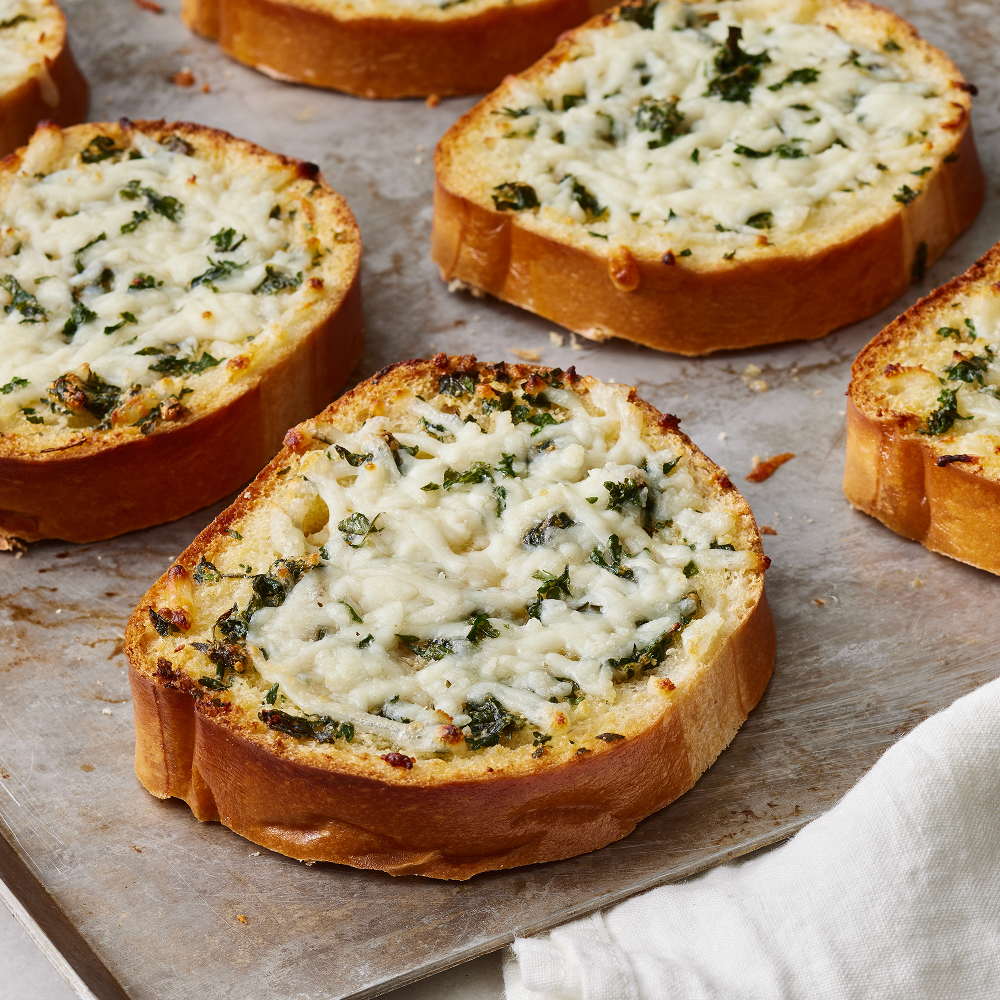

Garlic Bread

This garlic bread recipe is a great side and will pair well with Lisa's Lasagne
We think you will love this variation of the essential italian side dish.
Ingredients
- 1/2 cup of butter
- 1 1/2 tablespoons of garlic powder
- 1 tablespoon of dried parley
- 1 loaf of italian bread cut into slices
- 1 package of shredded mozzerella cheese
Steps
- Preheat the oven to 350 degrees
- Melt butter in saucepan over medium heat; stir in garlic powder
and dried parsley
- Place bread slices on a medium baking sheet. Using a basting brush,
brush bread generously with melted butter mixture.
- Bake in the preheated oven until lightly toasted, about 10 minutes.
- Sprinkle bread with mozzarella cheese and any remaining butter mixture.
Continue baking until cheese is melted and bread is lightly browned, about 5 minutes.